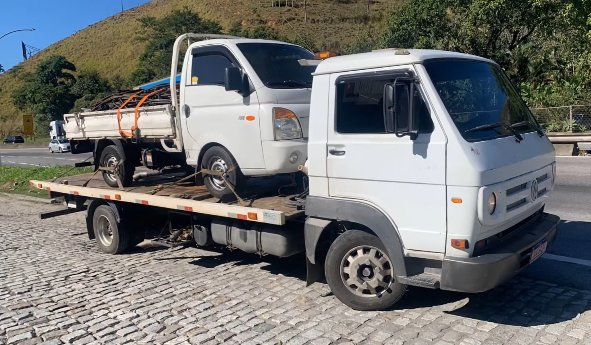

Conduz e opera caminhão do tipo guincho para remoção de veículos, máquinas ou cargas pesadas. Realiza inspeções e reparos nos caminhões, vistoria cargas e verifica documentação de veículos e de cargas. 